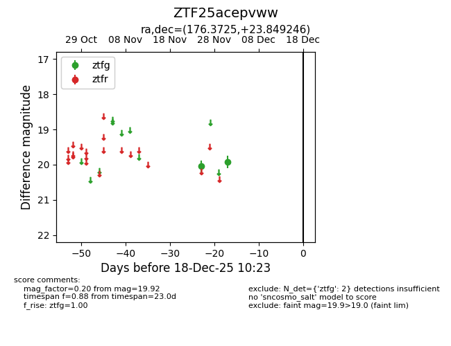
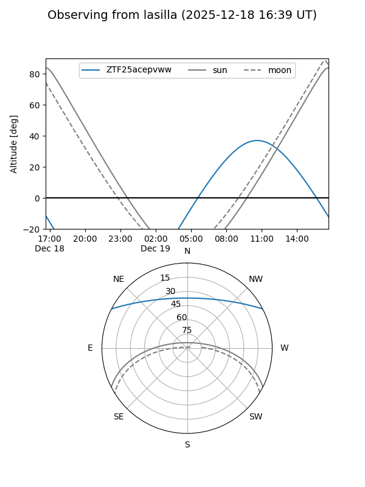
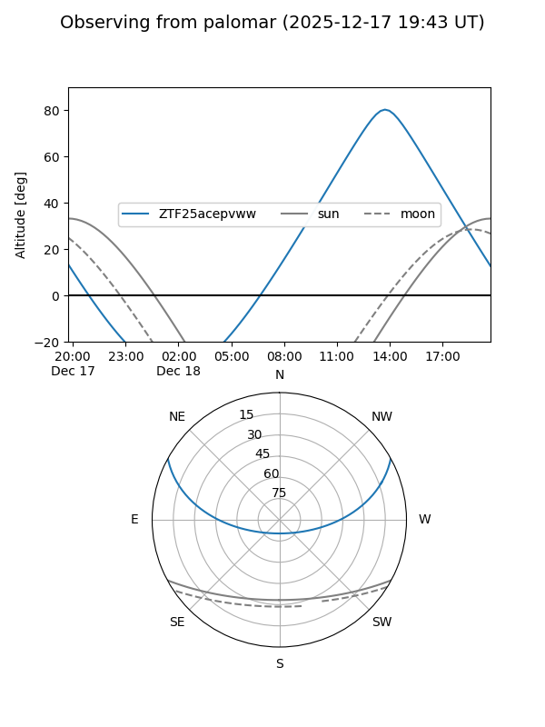

ZTF25acepvww
Target ZTF25acepvww at 2025-12-18 11:17
Aliases and brokers:
FINK: fink-portal.org/ZTF25acepvww
Lasair: lasair-ztf.lsst.ac.uk/objects/ZTF25acepvww
ALeRCE: alerce.online/object/ZTF25acepvww
alt names
ZTF25acepvww (ztf,fink_ztf)
Coordinates:
equatorial (ra, dec) = 176.3725,+23.84925
equatorial (HMS+DMS) = 11:45:29.39,+23:50:57.28
galactic (l, b) = (221.7035,+74.77342)
Photometry
last ztfg=19.92
2 ztfg detections
Lightcurve

Visibility


Additional plots